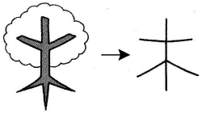
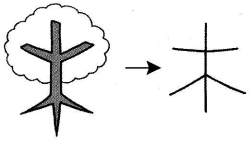

MỘC - Cây
- kanji :
- 木
- Âm Hán Việt:
- MỘC
- On
- もく、ぼく
- Kun:
- き、こ
|  | Đây là hình dạng của một cái cây This is a shape of a tree 木きの形かたちです。 |
|
|
|  | Đây là hình dạng của một cái cây This is a shape of a tree 木きの形かたちです。 |
|
|